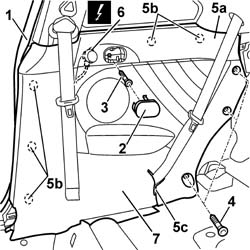

7040H50 REAR PANEL - R R
- Path
- Procedures > 70 FITTINGS > 7040 BODYSHELL INTERIOR TRIMS AND FITTINGS > 7040H ROOF PANEL LINING > 7040H50 REAR PANEL - R R
- Kind
- repair procedure (removal / refitting; the operation number is the code)
- Applies to
- all engines; all production periods
- Interactive page
- https://sloeber94.github.io/elrnDB-aGt/en/#/125001884
Applies to: all engines; all production periods
 Removing
Removing
 Refitting
RefittingOp. 7040L40 REAR COMPARTMENT SCUFF STRIP - R R
Op. 7050A22 REAR SEAT CUSHION - R+R
Op. 7040B10 LOAD PLATFORM (LUGGAGE PLATFORM) TRIM - R+R
Op. 7050A14 SPLIT REAR SEAT ASSEMBLY - R+R
1. Remove the perimetral seal on the door near the rear side piece area.
2. Remove the ashtray.
3. Undo the bolt.
4. Undo the side bolts fixing the rear panel.
5. Release the rear panel (5a) from the inner retainers (5b) using the special tool and pass the rear seat belt through the special notch (5c) in the side panel.
 | Name | Country |
|---|---|---|
5b | Scraper blade | 1.823.015.000 |
6. Disconnect the electrical connection.
Name | Connector | |
|---|---|---|
6 | Rear left tweeter speaker | See P47 REAR LEFT TWEETER SPEAKER |
Name | Connector | |
|---|---|---|
6 | Rear right tweeter speaker | See P48 REAR RIGHT TWEETER SPEAKER |
7. Recover the rear side piece.

Applies to: all engines; all production periods
Refitting
RemovingCheck that the rear side piece is not damaged.
Connect the electrical connection.
Name | Connector | |
|---|---|---|
- | Rear left tweeter speaker | See P47 REAR LEFT TWEETER SPEAKER |
Name | Connector | |
|---|---|---|
- | Rear right tweeter speaker | See P48 REAR RIGHT TWEETER SPEAKER |
Attach the rear panel to the inner retainers after having passed the rear seat belt branch through the special notch.
Tighten the side bolts and the middle bolt fixing the side panel.
Fit the ashtray.
Fit the perimetral seal on the door frame near the rear side piece.
Op. 7050A14 SPLIT REAR SEAT ASSEMBLY - R+R
Op. 7040B10 LOAD PLATFORM (LUGGAGE PLATFORM) TRIM - R+R
Topics linked from this page (5)
- 7040B10 LOAD PLATFORM (LUGGAGE PLATFORM) TRIM - R+R
- 7040H80 PARCEL RACK
- 7040L40 REAR COMPARTMENT SCUFF STRIP - R R
- 7050A14 SPLIT REAR SEAT ASSEMBLY - R+R
- 7050A22 REAR SEAT CUSHION - R+R
Topics that link to this page (14)
- 3340A35 LEFT REAR WHEEL RPM SENSOR - R R
- 3340A37 RIGHT REAR WHEEL RPM SENSOR - R R
- 3340A44 REAR WHEEL RPM SENSORS (TWO) R R
- 5505C28 INTERGRATED ENGINE BAY AND ABS SYSTEM WIRING - R R
- 5505C41 CABIN WIRING - R R
- 5570T94 REAR TWEETER (ONE), LH OR RH - R R
- 5570T96 REAR SIDE SPEAKER - R R
- 5580T20 BOSE SOUND SYSTEM REAR SPEAKER (ONE), LH OR RH - R R
- 7035C14 FIXED REAR SIDE WINDOW ONE LH OR RH R R INCLUDES CLEANING OF HOUSING
- 7040H10 ROOF PANEL LINING - R R
- 7040H42 REAR PILLAR TRIM - R R
- 7065A18 HEIGHT ADJUSTER OF ON FRONT SEAT BELT ONE LH OR RH R R
- 7065B10 L/H OR R/H REAR SAFETY BELT (ONE) - R+R
- 7065B40 BRACKET FOR REAR SEAT BELT WHEEL (ONE) LH OR RH - R R